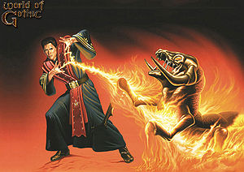

Gothic
 De: La Frikipedia, la enciclopedia extremadamente seria.
De: La Frikipedia, la enciclopedia extremadamente seria.
De la serie Videojuegos:
Gothic

que esto no es una tribu urbana ?
| Desarrollado por:
|
Bites de piraña (Pyranha Bytes), eso mismo que no te gustaria encontrar en el bidé
|
| Distribuido por:
|
De hierba de pantano, principalmente
|
| Diseñado por:
|
Alguien muy colocado con lo citado arriba
|
| Motor
|
Chimpin's aseleraitor 1800
|
| Género(s)
|
Rol del que te hace desear liarte a leshes con la gente
|
| Fecha de lanzamiento:
|
Curiosamente, antes de la segunda parte
|
| Modos de juego:
|
Manual o con cambio de marchas automatico
|
| Requisitos:
|
Ganas de ser encarcelado solo para escaparte y un total desprecio por la vida social.
|
| Disponible en:
|
callejones oscuros
|
| Formatos:
|
en Dolby surround o estereo cutre.
|
| Edades:
|
Cualquiera que no sobrepase la maxima.
|
| Puntuaciones:
|
Depende de los actos delictivos perpetrados.
|
NO NOS CONFUNDAS CON LOS EMOS !
« Estúpido Morra»
~ Orco tratando mal a nuestro heroe, y refiriendose con la palabra "morra" al ser humano.
«No me importa tu nombre»
~ Diego con una frase que marcara el devenir de todo el juego.
«No entiendo nada»
~ Yo , jugador casual de Gothic.
«¡Maldito seas tú, felpudo mohoso y maloliente!»
~ El héroe sin nombre , en una amistosa charla con un zombi.
Juego de rol en el que manejas a un pobre desgraciado sin nombre que es arrojado a una colonia penal donde los convictos están armados hasta los dientes. la razón de que estas en la colonia penal es supuestamente inexpugnable por "no sé sabe muy bien qué". A base de ahostiarte con la fauna local y los demas presos, consigues experiencia que podrás usar para escapar de la prisión, donde ni el medio millar de desgraciados allí metidos por un porrón de años aún no lo han conseguido.ademas tienes que liquidar una gran cantidad de bichos feos, y algunos corruptos que intentaran engañarte, para poder llegar hasta un "dios" si se le puede llamar así, para terminarte el juego y liberar a los pobres convictos de una "prisión mágica", para después volver a salvar el mundo.
Introdución historica
Erase un dia muy bonito en el idilico y waltdysneisiano reino de Myrtana, donde el rey Robhar II se dedicaba a exprimir y robar a sus subitos (¿Creen que el nombre es casualidad?). Pero no todo es tan idilico como al monarca le gustaria, pues una horda de orcos (los del Warcraft no, otros), andan de botellón libremente por todo el reino, dejandolo todo hecho una pocilga. Siempre preocupado por que se guarden las buenas maneras en su reino, el rey manda a todo su ejercito de maderos para multarlos y expulsarlos.
Se encuentra con dos problemas. Uno, que los orcos no tienen ni un misero duro. Dos, que las noches durmiendo en los bancos del parque han oxidado sus navajas de dos metros, matando del tetanos a todo el que pillen por delante. Así que para expulsar a todos aquellos alborotadores peludos, el rey se vio obligado a gastarse el dinero de los contribuyentes en armas de un mineral "mágico" que supuestamente hace unos espadones mejores que una navaja andaluza.
¿¿Y dicen que cambian piedras por ESTO??
Como a estas alturas de la peli la peble ya no tenia ni con que comer, el rey los acuso de impago de impuestos y mandó a medio pais a picar piedra al valle de Khorinis, isla famosa por su mina de mineral "mágico". Para evitar que tuvieran la genial ocurrencia de escapar, tambien mandó sus mejores magos para que hicieran una barrera mágica sobre todo el valle (Siempre destacó por sus ideas brillantes) que impidiera escapar a los felices reclusos.
Y asi, los "mejores" magos cometieron la chapuza de su vida y se quedaron atrapados en su propia barrera.
Y asi los presos, armados con piquetas, se cargaron a
todos los guardias y se hiccieron los amos del cotarro. Los magos se cagaron en las túnicas y se pusieron de su lado.
Pero nuestra querida sanguijuela con corona necesitaba el mineral, asi que tuvo que ceder a los chantajes. A cambio de piedrecitas brillantes, el rey les daba todo cuanto pidieran (y esto incluye mujeres de "grandes atributos")
Los campamentos
Disensiones internas entre los reclusos por los limitados recursos femeninos, tendencias politicas y el roce porque unos son del Betis y otros del Sevilla han llevado a la distribución de la población en tres campamentos, cada cual con su ideologia.
Campamento viejo (Chantajesindicalismo)
Es el más grande de todos los campamentos, y se organiza de un modo nunca antes visto en una sociedad humana: Cuatro cabronazos se forran y se pegan la gran vida a costa de una gran masa obrera sobrexplotada y coaccionada. Tienen la más grande de las minas bajo monopolio exclusivo, sacando el mineral solo para hacerle chantaje al viejales de Rhobar. El campamento esta asentado en un viejo castillo antes propiedad del rey ¿Okupas o amortización de los bienes inmuebles?
En dicho castillo solo vive la High Society, la masa obrera es alojada en chabolas del extrarradio. Todos los miembros del campamento tienen una función asignada, de manera que cuando quieran ir a partirte las piernas, sepan localizarte. Pueden distinguirse:
- Raspadores: Estos desgraciados miserables son los que sustentan la superestructura capitalista con el sudor de su frente trabajando veintiseis horas diarias en la mina picando piedra. A pesar de que este es el campamento más rico, estos tios apenas tienen nada y estarian dispuestos a rebanarte el cuello por un cacho de queso. La mayoria de los presos lo son, dado que la primera oferta de trabajo que recibes al llegar es que o le das al pico, o los guardias te apalizan y perculan (No lo tacho por qué va en serio). De lo poco que sacan en la mina, la mitad se va a los bolsillos de los peces gordos, la mitad de esa otra mitad para sobornar a los guardias y asi pasen de ti cuando les apetezca ahostiar o percular algo, lo que queda se lo gastan en comida, esto es, una mierda de pan que parece un ladrillo. Cuando no estan en la mina, sus principales pasatiempos son: Comer,fumar porros de hierba de pantano, sodomizarse (Aclaremos que la mayoria de estos tios no han visto a una tia de lejos en diez años), pegarse de hostias y dormir. Sabes que eres uno de ellos cuando: Llevas con orgullo una barba marxista y costras de roña de más de un año de antiguedad geologica, tu ropa tiene mas agujeros que tela, no te separas de la piqueta ni para ir al baño, siempre tienes hambre y sueño, los guardias la emprenden a palos contigo y consideras la homosexualidad como una solución a la soledad.
- Sombras: Se le llama asi la gente que se han convertido en unos miserables lameculos de los peces gordos para no tener que darle al callo en la mina, pero no pasan de ser unos miserables lameculos. Supuestamente sus tareas son las de un asalariado de los jefes, como llevarles el té a la cama o defender el campamento de la fauna local. Curiosamente, NUNCA los ves haciendo nada realmente util, solo si son del subtipo "Trepa" o para evitar que un animal se los coma vivos, e incluso asi lo más probable es que salgan por patas. Estos tios trapichean con porros y cosas que chorizan a otros, montan peleas semi-legales y te enseñan cosas tan utiles como andar sigilosamente, abrir cerraduras y el arte del carterismo. Normalmente los encontraras sentados en un banco de mierda delante de su chabola mirando a las musarañas. Sus rasgos distintivos son una armadura roja de tela y cuero remendada a cuadros al más puro estilo miraobras (Hay hipotesis que basandose en su pasividad laboral ofrecen una relación directa) y una espada cutre pero afilada del subtipo "Extra sin nombre del Señor de los anillos". Su mayor habilidad es que cuando les mandan hacer algo, se lo endosen al primer pringao que pillen, amenazandole con partirle las piernas y sodomizarlo como la pifie. Tambien comparten con los Raspadores su creencia en la homosexualidad como via alternativa.
- Guardias: La definición más basica de estos tios son matones a sueldo. Mezclan el trabajo con el placer (Ahostian y sodomizan por el mero hecho de pasar el rato). A algunos les toca la tarea de vigilar el barrio de chabolas, lo cual hacen eficientemente extorsionado a los raspadores, con lo cual no les queda nada por lo que pelearse. Suelen tener la constitución de un portero de discoteca y no los arrojaron a la colonia prisión por impago de impuestos, precisamente. Estos son los primeros que te reciben nada más llegar, con un cordial hostiazo en los morros. Se les distinge por su armadura chorizada a los antiguos guardias de la prisión.
Un raspador implorando ver a una de las concubinas de los jefazos. Sera porculizado por ello.
- Magnates del mineral: Los amos del cotarro, se pegan la gran vida en el castillo y su rango depende del tamaño de su espadón. Viven como reyes sin pegar un palo al agua (aunque si hay que darlo a tus costillas, lo hacen), y rodeados de tias jamonas que como vestimenta usan hilo dental. Como les mires mal, mandaran a todo el campamento a sodomizarte. Son de los pocos en el campamento abiertamente declarados heterosexuales. Tambien son los que menos interes tienen en que se destruya la barrera.
- Magos de fuego: Los responsables de que todo el valle estea encerrado en una cúpula homicida gigante. Curiosamente, no estan metidos en demasiados trapicheos ni demas asuntos turbios. La razón por la cual los curritos aún no los han crucificado y orinado en sus ojos es por que son magos de fuego y pueden hacer una barbacoa contigo con solo decir un conjuro.
Campamento nuevo (Anarcoindependentismo)
Este campamento es una separación del viejo, y esta formada por gente que está hasta los nakasones de estar encerrados en una cúpula gigante y quieren salir aunque sea cavando un tunel con una cuchara. Esta asentado en una cueva, con estilo arquitectonico de Afganistán. La unica autoridad en este sitio es la que pueda tener tu garrote. Si en el campamento viejo te atracaban por un pedazo de queso, aqui pueden atracarte solo por la roña de las uñas, sin que nadie mueva un dedo. Odian a muerte a los del campamento Viejo. Tanto que les andan chorizando todo lo que pueden. Se declaran autosuficientes, cultivando ellos su alimento (arroz del malo y sake aún más malo). En este campamento estan los magos del agua, una escision de los magos del fuego, que hacen cavar a los raspadores en una mina, solo que en lugar de despues chantajear al monarca, se lo guardan en un pozo que despues piensan reventar como un petardo gigante a ver si asi se cargan la barrera de los cojones.
En este campamento, puedes ahostiar al que te de ordenes, el caso es que normalmente ellos te ahostian a ti. Entre tan amistosa gente se encuentran...
Ultima campaña publicitaria del campamento Nuevo.
- Raspadores: La unica diferencia respecto a los otros es que estos "cavan hacia la libertad" en lugar de para permitirle lujazos a los peces gordos. Una gran porción trabaja para el "Señor del Arroz". Este es un calvo forzudo con voz de bruto y una cara que lo confirma. Viste un mandil y solo le falta una motosierra para que lo contraten de psicopata en alguna peli. Como le digas que no cuando te mande deslomarte al campo a cultivar arroz, te van a caer las hostias de tu vida. Aunque los raspadores de este campamento no estan tan sobrexplotados, su comida es mucho peor.
- Bandidos: Lo más parecido a un bakala que te vas a encontrar por aqui. Como buenos bakalas, son unos cabronazos como Dios manda. Se pasan el dia fumando porros como cosacos, encendiendo uno con la colilla del otro. Molestan como solo ellos saben hacerlo y su principal hobby es putear a los del campamento Viejo, putear a secas e irse de movida al bar de la esquina o a partirle la crisma a la fauna local. Es recomendable que, si uno intenta intimidarte, le plantes cara inmediatamente. La mayoria son unos piltrafillas y si vas de remilgado te calarán y putearan por el resto de tu existencia, asi que no dudes en exterminar a cuantos veas por delante.
- Mercenarios: Securatas a los que los magos les pagan para que los bakalas no se salgan de madre y no interrumpan sus "importantes estudios" (Como por ejemplo, autoincendiarse la ropa). Lo mejor es no cabrearlos por que son realmente fuertes y pueden partir a la mitad de un hachazo al primer pringao que los mire mal. Normalmente son gente tranquila que se contenta con apretarle las tuercas a los bakalas, asi que ya sabes a quien arrimarte.
- Magos de agua: Disidentes de los magos de fuego, que estaban hasta los nakasones de hacer
orgias gays lo que quieran que hagan un monton de tios con tunica en un cubierto todo el dia. Quieren salir del valle de una vez, y no se les ha ocurrido nada mejor que juntar un monton de valioso mineral y hacerlo reventar para asi joder la barrera (según ellos, es completamente seguro y no entraña peligro alguno). Ellos son los unicos aqui que no viven en una cutrecasa de adobe o un cobertizo sin puertas. Tambien son los que pagan a los mercenarios. El consejo es tener cuidado con ellos , ya que son sospechosamente extraños y podrian convertir a todo el mundo en un cubito de hielo si les apeteciera.
Campamento del pantano (BuenrollismoHippy)
Nunca dejes que el arquitecto se fume más de dos kilos de hierba

Todo esto es producto de la hierba de pantano.
Lo unico que le falta a este sitio para ser una comuna hippy porrera son melenudos, ya que toda su población son fumetas rapados, liandose canuto tras canuto en honor a su dios: el Durmiente, que se les revelo en una visón tras consumir una cantidad ingente de hierba de pantano (Nombre con el que se conoce a la mariguana en la prisón). Tras esta tan fiable revelación divina, se montaron un campamento en mitad de un apestoso pantano poblado por moscas del tamaño de una oveja y unas cosas reptantes lo suficientemente grandes y hambrientas como para comerte de un bocado( por orden explicita del Durmiente). El concejal urbanistico del lugar tambien es consumidor asiduo de hierba, ya que todo esta puesto como le salio de los cojones, colocando cabañas a veinte metros del suelo sobre pasarelas de madera podrida y ningún tipo de barandilla. A esto sumemosle el estado derivado de tomarse una docena de canutos seguidos y nos encontraremos con una alta mortalidad de los integrantes por despeñamiento. Nadie en este campamento ha oido hablar de la propiedad privada, ya que no hay absolutamente nada que robarle a nadie. Aqui nadie cava en una mina ni nada, basicamente tienen una plantación de hierba de pantano. Una vez procesada y liada en canutos de facil y simple uso (tan simple que puedes encenderlos sin cerillas ni ningun tipo de fuente calorifica) la distribuyen masivamente a traves de su red de camellos calvorotas por todo el valle. Por eso nadie se cabrea nunca con ellos, por que son los que realmente tienen la sartén por el mango. Cabe destacar que te dan muestras suficientes para que te enganches pero nunca lo suficiente para colocarte, para eso tienes que pagar. Todos los calvorotas de este sitio estan absolutamente convencidos de que su dios, el Durmiente, aprecerá y los liberara asi a lo rollo Biblia. El saludo oficial es un sonoro y estridente "¡¡Despierta!!". Entre tan simpaticos calvorotas, te encuentras a...
- Novicios: El grueso de la población, y la mayoria solo se han apuntado a la secta porque daban canutos gratis (como todo el mundo, vamos). Lo unico que hacen en todo el dia es fumar porros,aguantar las brasas de los gúrus, fumar porros, recolectar hierba de pantano y liarsela. Ah, y fumar porros. Son pobres como ratas y la gran mayoria solo viste una faldita (No te engañe, no es amarilla,eso es mierda incrustada), y si estas pensando que por llevar falda son gays, recuerda que mitad del valle lo es debido al acentuado deficit femenino, y no por ello son más gays que los que llevan pantalones. Se tatuan la calva y en ocasiones se ponen a postrarse delante de otros calvos.
- Templarios: Oficialmente, estos son guerreros que luchan por la gloria del Durmiente, y este les ha concedido fuerza y no sé qué poderes chungos como hacer una croqueta carbonizada contigo a base de emitir llamas con su mente. Observaciones más cientifics apuntan al alto consumo de hierba de pantano como origen de toda esta parafernalia. Sus organismos asimilan los canutos, haciendolos más cachas y desbaratando sus neuronas dejando su calva como un microondas escacharrado que emite ondas psico-churriguerescas, haciendo que realmente creas que tienen poderes. Los tengan o no, lo que si es verdad es que tienen un espadón del quince y son unos lunaticos sectarios, asi que mucho ojito. Por cierto, muchos aún van más desnudos que los novicios.
- Gúrus: Sacerdotes del durmiente y los unicos con una cantidad decente de tela cubriendoles el cuerpo. Si intentas hablar con ellos, solo te contestaran con un gruñido resacoso, ya que no pueden hablar con un infiel por riesgo a impurificarse (adivina en que se pasan las noches...). Son los que mandan en el campamento. Tienen poderes tales como darte una brasa de media hora compactada en cinco minutos, de manera que te soban instantaneamente, o lanzarte una nube de humo verde (curioso...) que te mete un hostión peor de los que recibia el Coyote. Tambien se encargan de la investigación y refinamiento de "nuevas substancias psicotropicas".
Flora y Fauna
Como todo juego de rol, el valle cuenta con su población de animales pokemonizados a los que debes partir la cara sino quieres que te coman vivo.
"Que lindo perrito... ¿Puedo acariciarte los dientes?"
- Hierba de pantano: Versión rolera de la mariguana, y de consumo legal. Crece espontanamene en lugares pantanosos (con un charco delante de tu casa es suficiente) y no necesita ningun tipo de cuidado. Si no te apetece liartela,siempre puedes comertela cruda, que sigue colocando.
- Sabandijas de Carne: Bichos de bola del tamaño de un zapato, y probablemente el unico animal no xenófobo de todo el valle. Hacen un ruidito muy molesto y siempre andan hurgando en la mierda. Si consigues derrotarlo, podras sacar un cacho de carne del ochenta por ciento del tamaño del insecto y comertelo crudo asi tal cual, sin riesgo de enfermedad. Es un suculento manjar codiciado por todos. Muchos te degollarian por un solo pedacito de tan sabrosa carne.
- Carroñero: Aves sin alas ni plumas y algo raquiticas. Más feas que Michael Jackson desteñido y tan ruidosas como él. Se pasan el dia picoteando el suelo o durmiendo por las noches (cosa que ningun otro animal de por aqui hace). A pesar de que van en grupos, es muy facil separarlas solo quedandote cerca, y asi ahostiarlas hasta la muerte sin que el resto de carroñeros (a unos 8 metros aprox.) hagan ni puñetero caso. Cuando te ven gritan como desgraciados algo que suena más o menos a "Pokoo" y menean la cabeza más que un jebi. Despues se lanzan pateticamente hacia ti para ahostiarte a cabezazos hasta que la palmes (o hasta que tu le cortes el rollo de una patada, vamos). nadan como patos y basicamnete esto es lo mas parecido a carne con patas que te encontraras por aqui. Puede comerselos crudos sin ningun problema.
- Ratopo: Supuesto cruce entra rata y topo, pero que en realidad se asemeja más a un gorrino cruzado con una piraña y un poco de wombat. Gorrino por la chicha que tiene el bicho, su color rosado que hace que te apetezca una barbacoa solo con verlo y los chillidos y gruñidos que pega. Wombat por su mala leche y agresividad que raya en la xenofobia. Piraña por los pedazo piños que tiene el animal de las narices. Su habitat natural es el campo y las cuevecitas pequeñas del tipo "Aqui estuvo un sin techo"(antes de que los ratopos se lo comieran vivo, claro esta). Su carne puede comerse cruda.
- Lagarto: Varano hormonado de una isla de estas adonde fue Charles Darwin a hacer sus teorias. Un reptil del tamaño de un cocodrilo, con dientes y lo que es peor: con hambre. Tanta que el bicho se te lanza encima nada más verte a una velocidad mayor de la que tu puedes correr. No puedes comer cruda la carne de este animal (más que nada, porque no te da ni un muslo, el muy agarrao), aunque el bicho parece si poder comer la tuya cruda.
- Lagarto de fuego: Lo mismo que el de antes, pero con una vela en la espalda y un soplete en la boca. Su lengua es de uso importante en la industria de fabricación de mecheros ilegales.
- Trasgos: Enanitos verdes (los hay negros, peroe eso es que la unica vez que se acercaron al agua, esta estaba llena de chapapote...) Llevan espaditas u otras armas muy cutres. Puedes cargarte a uno solo de una simple patada, pero cuando son muchos te van a llover las hostias.
- Mosca de Sangre: Moscas del tamaño de un perro. Necesitarias como minimo una bombona de butano llena de insecticida para cargartela. Tienen un aguijon enorme (para los malpensados, si, podria ser ESO) con el cual te hacen un alfiletero. Son jodidamente rapidas y no les atinas ni con mira telescopica. Cunado te las cargas, puedes quitarles el aguijon y comertelo crudo. Es un potente afrodisiaco que hace que recuperes vida gradualmente (más si encuentras algo con lo que "pasar el rato")
- Lobo: Canis lupus tradicionales de toda la vida. A falta de ovejas, se les da por comer carroñeros o viandantes.
- Mordedor: Bicho bipedo con una desproporcionada mandibula y unos cuantos dientes. Como el nombre sugiere, muerde que da gusto y con razón esta asi de rollizo el animal. A primera vista podria parecer la evolución pokemonizada de un carroñero, pero su dieta carnivora y su mala leche wombatiana desmienten todo parentesco. Tienen de peculiar de que no aguantan ni media bofetada que les metas, pero pueden arrancarte una pierna a mordiscos con la misma facilidad con la que el Niño loco aleman destroza el teclado.
- Perro Orco: Adorables mascotas de nuestros grandes amigos, los orcos. Son unos lindos perritos de un curioso cuando menos color verde/marrón sucio. Estan repletos de garras, dientes y rabia (que a pesar de todos los mordiscos que te dan, no te la contagian) Suelen ir acompañados de algun orco solitario que
desahoga sus penas con los animales cuida a los pobres cachorritos abandonados. Ni que decir tiene que son tremendamente jugetones y nada mas verte se pondran a jugar al pilla-pilla.
- Orco: Sí, los guardianes de los perros orcos, conocidos como perras orcas o simplemente orcos. Mas cachas que los Uruk-hai que porculizan a Frodo, los orcos del Gothic harán los posible por hacerte picadillo en cuanto te vean. Estos individuos serán de los pocos humanoides que no intenten porculizarte, simplemente te descuratizarán y te echarán a trocitos a la olla para hacer contigo un buen caldo. A diferencia de otros juegos, estos orcos tienen su propio idioma: el Kukuxumusu. Sus deidades mas conocidas son Unga-shaka (dios de la guerra) y Ulumulu (dios de la virilidad orca, simbolizado por un palo). Solo si llevas un icono del dios Ulumulu y un buen puñado de roña encima podrás entrar en el campamento orco sin que te descuarticen para hacer caldo. Aun así, no les toques mucho los webos que te quitan el palito y te lo meten por ahí.
- Esqueleto: Desnutrido Guerrero ligero, que ha muerto de inanición y no ha pillado nada mas para comer que unos hongos venenosos, y por eso esta cabreado y te va a querer zurrar luego comerte y despellejarte, para hacer un abrigo con tu piel para contener el frió y no morir por segunda vez. estas criaturas tienen una navaja de 2 manos como de 2 metros y medio, que te cortaran por pedacitos si te acercas demasiado, ademas son rápidos con sus armas, suponen una gran amenaza para el héroe, pero si estas en un nivel alto, afilaras tu espada con sus huesos.
- Zombie: Cabreado muerto-vivo que le hace compañía a los esqueletos, estos muertos son un poco mas musculosos que los huesos andantes, pero por la misma razón son mas lentos y mas fuertes. viven en cuevas, cementerios y en bosques. no portan armas y no suponen una amenaza grave gracias a su lentitud, pero si te pilla y te araña te quitara una considerable cantidad de vida y te pegara el "Virus T" y te morirás en una fracción de segundo.
- Reptador de la mina: Termitas/hormigas gigantes que viven en el subsuelo. Sus mayores concentraciones se dan alla donde se encuentran grandes cantidades de mineral, gracias a la ecuacion "Mineral atrae minero, Reptador zampa minero". Pese a su gran tamaño se les asusta facilmente (con una hostia en los morros retroceden como condenados), vamos, son unos caguetas. Los hippies del pantano los cazan en masa para quitarles los piños y destilar "no sé que sustancia" que ayuda en la concentración y meditación. (Si la hierba de pantano ya les hacia meditar, esto ya debe de...). Dicha sustancia es vital para la gran invocación al Durmiente que piensan hacer en lugar del botellón de todos los findes, y la necesitan en cantidades industriales. En otras palabras, que te vas a forrar chantajeandolos.
- Acechador: Pulcro reptil de cierto tamaño que suele estar cerca del agua (a diferencia de casi todo bicho viviente del valle). Es como un cocodrilo de patas largas y uñas de medio metro, que curiosamente, hacen ruido de cascabeles cuando te dan. Si se te ocurre la genial idea de escapar nadando, preparate para que te arranquen los gluteos a mordiscos.
- Chasqueador: Velocirraptor al cual le amputaron las patas delanteras. Por este motivo esta muy resentido y si hace falta te perseguira hasta el fin del mundo para que le devuelvas las patas a mordiscos si hace falta. Es el bicho más rapido del juego, ademas del que tiene más dientes.
- Cuchilla: Digievolución de los Chaqueadores. Uno de los favoritos a "bicho más capullo del juego" gracias a su eficiencia a la hora de degollar y destrozar al jugador antes de que este se dea cuenta de que ha pasado algo. Curiosamente, el bicho tiene DOS patas, pero puedes arrancarle TRES garras...
- Arpia: Cruce entre una jessi y una urraca. A pesar de tener atributos femeninos no despreciables, su cara es más fea que una berenjena con mostaza. Berrean como desgraciadas, emitiendo letales decibelios para intentar cargarse los oidos del jugador. Su principal metodo de ataque es intantar sacarte los ojos con los pies, que no han pasado por una pedicura desde que antes que las bichas nacieran. A veces tienen la costumbre de permanecer inmoviles sobre tu cabeza...
- Bestia de la sombra: Algo asi como el cruce entre un toro de lidia y un tigre de bengala. Duerme de dia y se pasa la noche de farra, zampandose deliciosos humanos (y por ende, la hierba de pantano de estos). Tiene un gran cuerno frontal que usa para embestir, porculizar y desgarrar (en ese orden).
Un troll expresando su admiración por su primo segundo por parte de madre
- Tiburón de la cienaga: Una sanguijuela de cuatro metros. Pasa de pegarsete y exprimirte la sangre, ahora te zampa enterito. (Esperemos que las otras sanguijuelas bancarias no tomen ejemplo). Al igual que estas, son inmunes a cuanto hagas contra ellas a no ser que como personaje tengas a Terminator . Viven reptando por el pantano, arrastrandose por la porqueria y alimentandose de... hierba de pantano y cuanto pille por delante. Su forma fálica inspiro ciertos aspectos la religión de los sectarios del pantano.
- Troll: Tres metros de alto por dos de ancho de pelo, bestialidad y mala leche. Creen que dan miedo asi que te ataca metiendote de hostias, en lugar de arrancarte las piernas. Una sola basta para hacerte emprender un precoz vuelo sin motor a mas de seis metros del suelo. Atacandole solo conseguiras cabrearlo mas. La mejor manera de matarlo es cabrearlo hasta tal punto que le dea un ataque cardiaco.
Personajes Importantes
 Milten tuvo una etapa de exterminador de Zerlings.
Por supuesto, hay mucha gente importante en el valle. Gente que esta podrida de pasta, gente a la que conviene no darle la espalda agachado... Aqui damos una breve lista de los presos más IN del momento...
- Diego: Este tio parece sacado de la España de Alatriste. Es un espabilado y probablemente uno de los tios mas majetes que puedas encontrar. Es una sombra, y se unio al campamento Viejo por que ahi estaba la pasta. Es de los tios más importantes del lugar, ademas de que, por alguna extraña razón, ayuda al heroe sin nombre de una manera desinteresada muy poco comun (Que cosa más rara...) Le trincaron por que su vecino lo acuso de unos chanchullos (inmobiliarios, fijo) para despues quedarse con su casa. El tio es uno de los mejores chorizos habidos y por haber. Se rumorea su participación en el robo del cerebro de Bush cuando este aun estaba en el utero materno.
- Milten: Un preso remilgado, que tuvo la inmensa potra de ser admitido como aprendiz de los magos en el campamento viejo (Ignoramos las penalidades que tuvo que pasar para llegar a ese puesto y que es lo que realmente hace con todos esos en el cobertizo) En cualquier caso, ahora ya no es un preso, ya que al alistarse se le borran los crimenes (algo asi como la Legión). Como e sun remilgado, pero un amgo de fuego, vive pacificamente con todo el mundo sin que nadie se atreva a toserle en la cara. Tiene una extraña "fijación" por el Héroe sin nombre.
- Gorn: El puto amo. Su sola mirada aterra a los hombres y hace disfrutar a las mujeres. Este negro es el más fuerte de toda la colonia y hace lo que le sale en gana, sin que nadie se atreva a chistarle. Usa su hacha tanto para partir orcos como para sacarse la comida de entre los dientes. Otro que tiene esa "fijación" por el prota.
- Lester: Primo de Bob Marley, se pasa el día fumando porros. Fue admitido en el pantano hace mucho tiempo y desde entonces no ha hecho mas que liarse canutillos para ir fumado todo el día. Dice que pronto dejará de ser novicio, pero la verdad es que no se lo cree ni él porque no hace nada de utilidad (aparte de saber liar los porros). Le gusta cogerse buenas fumadas con el Héroe sin nombre. Es amigo de los tres de arriba, y normalmente quedan para hacer sus orgías porculiceantes, a las cuales intentan invitar al Héroe sin nombre (ya se sabe, carne fresca y tierna).
- Lee: Gran jefazo de los mercenarios. Ni los maguitos de agua le dicen nada, así que tú tampoco te metas con él. Tendrás que lamerle mucho el culo si quieres ser mercenario y que los bandidos no te extorsionen, apaleen y porculicen. Se ve que también es consumidor habitual de los porritos de la gente del pantano, porque se cree que una vez fue un gran general del rey Ladrón II, que le traicionaron (dice que fue un noble que se tiraba a su mujer y lo denunció por nosequé), que quiere vengarse del rey y que tirará la barrera mágica a cabezazos si hace falta. Cuando no va tan fumado es un buen tío.
- Lares: Otro jefecito, pero en este caso de los bandidos cabrones. Entre sus aficiones cabe destacar el fumar canutos, practicar con el arco usando a raspadores cómo diana, beber calimocho de arroz, comer testículos de soldado del Campamento viejo (por alguna razón cree que le dan virilidad, aunque de poco le sirve en la colonia) y sobretodo organizar redadas de pillaje para pedir prestado a las caravanas que van a la vieja mina algo de mineral. Cabe destacar que siempre se lo entregan encantados ((bajo amenaza de castración)).
- Saturas: Es el chulito y/o mandamás de los magos de H2O. Está empepinado en hacer explotar el montón de mineral para petar la barrera mágica. Por alguna razón que nadie alcanza a comprender, está convencido de que eso no hará daño ni a una mosca de sangre. Filósofos de toda Myrtana dudan de quien está más loco: si él o los de la secta, pero las ganas de salir de ahí hacen que uno haga locuras. Nadie le dice ni mu al tío a pesar de todo, porque tiene a los mercenaios comiendo de su mano (concretamente en ella tiene mineral, nótese la metáfora/sarcasmo) y básicamente porque puede convertirte en un polo con solo tirarse un pedo.
- Corristo: Su alitosis ígnea era tal que lo nombraron jefe de los magos de fuego después de la dimisión de Xardas. Se encuentra en el templo de los susodichos magos en el castillo del Campamento viejo. Es con quien tienes que tratar si quieres hacerte mago de fuego, pero cuidado, porque te hará un examen de acceso, en el que si no sacas un 9'99 cómo mínimo te impedirá ingresar y serás porculizado (cansado ya de los de siempre. La única carne joven que tiene es Milten). Reiros de la Selectividad.
Pero si lo consigues te dará una túnica muy chula en la que se puede leer: "Advertencia: No llevar ante la presencia de toros".
- Thorus: Es el segurata de la puerta que da al castillo del Campamento viejo. Cómo el héroe va hecho un pordiosero y encima lleva calcetines blancos no te dejará entrar hasta que lleve una ropa decente y le haya lamido el culo a los sombras del campameto, o bien tenga un amuleto de pase V.I.P de los magos de agua o bien si trae costo y maria del campamento del pantano. El soborno, cómo no, también es otra opción (tras lo cual darle unos cachetes en la mejilla a lo mafioso queda de coña).
- Gomez: Es el don de la colonia, el papichulo del mineral, el king africa del campamento viejo. El tío se lo ha montado de lo lindo, y tiene a su disposición a todo un harén de titis que consigue a cambio de las piedrecitas que da al viejo Robón después de que sus lacayos porculizados las extraigan. Es el único del lugar enteramente heterosexual, no obstante le gusta porculizar con su espadón (prolongación de su pene y orgullo) a todo aquel que vea en su castillo suplicando curro cómo lameculos si no le cae bien. Tiene a su servicio a todo un ejérito de soldados y guardaespaldas (high-lameculos). La grandiosidad de su megalomanía solo es comparable al tamaño de su espada (Llamada "La rabieta de Innos" o algo así).
- Y'Berion: El más fumao de todo el campamento del pantano. Fué el que fundó la comuna hippie de la colonia después de un colocón de los que se deja constancia en las crónicas en el que un tal Durmiente le dijo que liberaría de la jodia barrera a todo el que le siguiera (creyera) su historia de fumeta. El chaval está en la posición 2 en el ranking de los que se lo han montado mejor,ya que tiene canutos y tias a su disposición a punta pala (¿acaso hay otra razón por la que fundar una secta de la que se será el líder?).
- Kor Kalom: Es la mano derecha de Y'Berion (no en sentido estricto). El pavo aspira a ser el líder de la secta (normal) y es el que hace los mejunges psicotrópicos en su laboratorio ilegal de narcotráfico. Tiene un ayudante (carne joven) y un guardaespaldas (carne musculosa y fuerte) para sus noches de sexo gay después de unos cuantos canutos. Si lo miras mal su guardaespaldas te porculizará a lo bestia.
- Xardas: Es un marginao que decidió pasar de los magos de fuego porque tenia cosas más cool que hacer. Vive en su torre en el territorio orco donde la soledad lo ha obligado a tirarse el día mirando revistas porno (¿o qué os creeis que ocupaba tantas estanterias?) y a matarse a pajas (razón por la cual tiene los ojos blancos, de ciego que está ya). No obstante, entre paja y paja le queda tiempo para invocar a compañía de baja fibra moral (demonios) y a descubrir que cojones es lo que alteró la creación de la barrera.
- Cor Angar: El líder porcularizador de los templarios. Tiene los huevos pazo hinchados de ver entrenar a la peña, asi que al final se harta y se pone de jefe de la comuna Hippie, substituyendo al antiguo líder Y'Berion, que se muere de sobredosis diciendo nose qué de salir volando de la Barrera con la carrerilla de los explosivos de los magos del H2O. Lo que se dice gente lista.
- Mud : Legendario personaje, es una mezcla entre superman, el vendedor chino de peliculas pirata que va por los bares y calico electronico, se le conoce por su arrojo y su valentia y es tan machote que es capaz de violarte varias veces sin que te enteres, durante la aventura este pintoresco (y valeroso) personaje te intentara echar "el aliento en la nuca" varias veces.
Personajes Secundarios
Personajes que no suponen parte importante de la historia, que no importan mucho y son un adorno del juego para que se veas mas bonito y fantástico, como el mundo de WarDysneyLandia.
- Raven: Feo magnate del mineral que seria de mas eficacia si lo pusieran de espantapájaros en una granja (¿en que otro lugar puede ser?), se la pasa todo el dia con su cara de palo vigilando la entrada a la casa de gomez, por si algún listillo se paso antes de la aprobación de los guardias, el te acompaña hasta gomez, como si te escoltara de no se que o de alguna repentina invasión de orcos en una fracción de segundo. este tipo nerd no es mas que otro adorno mas para el juego.
- Nek: Guardia muerto, que no se sabe por que murió o fue asesinado, se rumorea que fue cavalorn un sombra. este tipo esta desangrado en una cueva y sin darle importancia sus amigos ni lo entierran, lo dejan ahí tirado al pobre diablo. no marcó nada mas de historia que solo parte de conversación con un guardia y una misión de encontrar su amuleto para dárselo a un estúpido codicioso.
- Cavalorn: Un sombra cazador, que vive en una cabaña lejos de la civilización (es un ermitaño), no tiene compañía solo su fiel amiga "manuela palma callosa", se rumorea que asesino al guardia de arriba a ese tal Nek. este sombra no tiene mas importancia que venderte un par de flechas y virotes para las ballestas y armas de largo alcance.
- Dexter: Curioso sombra sin importancia (otro adorno mas), no recuerdo para que sirve, creo que para nada. este tipo me da una sensación de corrupción (sera por lo que ocurre en el gothic 2), este personaje es tan mierda que no se me ocurre nada mas para escribirle por que no tiene historia.
- Fisk: Fisk es otro sombra sin importancia, que vende pantalones de cavador y un par de armas que no te sirven ni para matar a una sabandija de carne. este personaje participa en una misión de una espada ornamentada o algo por el estilo. no sirve para nada mas que para comprar unas armas para un principiante de nivel 5. (no le compres los pantalones de cavador si no quieres ser un cavador para toda tu vida).
- Wolf: (Ojo que no es un Lobo) este mercenario se pasa todo el día sentado en una banca enfrente de una fogata. este mercenario te vende Armaduras de bandido, curiosamente no se sabe de donde las obtiene ya que en el campamento nuevo no hay herrero, y si lo hay esta bien escondido porque nunca lo he visto (juega a las escondidas), este personaje no marco historia en el juego, solo es un flojo que te venda armaduras.
|
|
 Shooter Shooter
 Terror Terror
 Velocidad Velocidad
 Rol Rol
 Estrategia Estrategia
 Aventuras Aventuras
 Fight! Fight!
 Clásicos Clásicos
 Deportivos Deportivos
 Aventura gráfica Aventura gráfica
 Novela visual Novela visual
 Personajes de videojuegos Personajes de videojuegos
|
Autor(es):
- Catacras
- Rogal Pron
- Penscythe
- JacKThERiPPeR
- Bladguer
- Harry El del Pote
- Wolfen Dlan
- Positronic
- Kokop
- Genericool
Frikipedia 2005-2016, Licencia
GFDL 1.2 - Extraído por FrikiLeaks